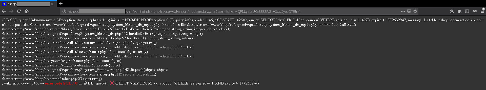
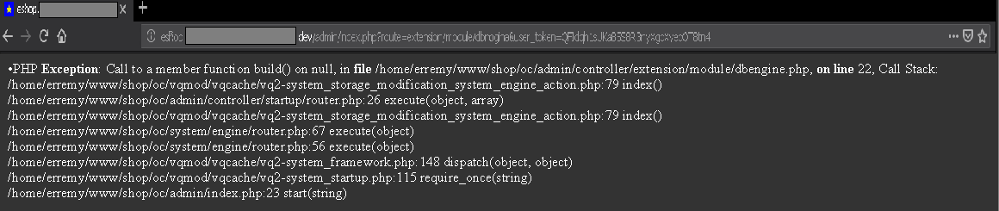
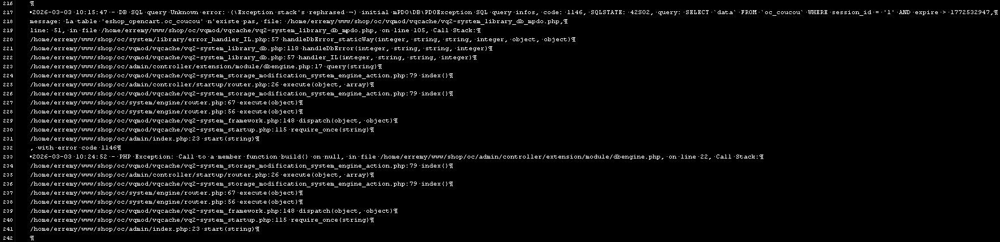

Question: comment récupérer toutes les informations des échecs (erreurs et exceptions) lancés par Opencart, avec «iWebEchoppe miscellanea»?
Cette extension («iWebEchoppe miscellanea») embarque avec elle un gestionnaire d'erreurs et d'exceptions PHP en dernier ressort (une exception est une erreur créée sous la forme d'un objet), sous la forme d'un fichier (par ex.: infologick_error_handler_03_00_01_00.vqmod.zip). L'installation de ce gestionnaire d'échecs permet de récupérer les informations spécialisées (du type \PDOException) émise par le serveur de base de données mySQL, en sus de celles généralistes (du type \Exception) gérées par la couche PHP. Dans les applications de gestion de données comme Opencart, une grande parties des erreurs proviennent du SGBDR qui les émet avec précision (ex.: "SQL syntax error", "Unknown column 'column_name' in the field list", etc). Cette information ajoute un gain de temps à l'analyse de l'erreur constatée, par rapport à son transtypage en une exception plus généraliste qui contient moins de champs et fait donc un choix quant à ceux restant pour notifier le problème advenu (d'où une perte d'informations spécialisée). L'interpréteur PHP met à disposition des adresses de fonctions de rappel selon la nature et l'endroit où un échec se rencontre (Est-ce un échec ponctuel dans un embranchement de la logique? Est-ce-une échec fatal (ex.: un fichier requis de code nécessaire à l'ensemble de la loqique est introuvable?)): «iWebEchoppe miscellanea» s'enregistre dans l'ensemble de ces fonctions de rappel, toutes contextuellement rappelées en cas d'échec de l'interprétation et sérialisant toutes le même code source centralisé des dits échecs. Ce faisant, ce contexte affiné des échecs est gage d'une meilleure compréhension du problème à résoudre.

Illustration de l'affichage d'une exception SQL (sur un serveur français)

Illustration de l'affichage d'une exception PHP (sur un serveur français)

Illustration du journal d'écriture des échecs